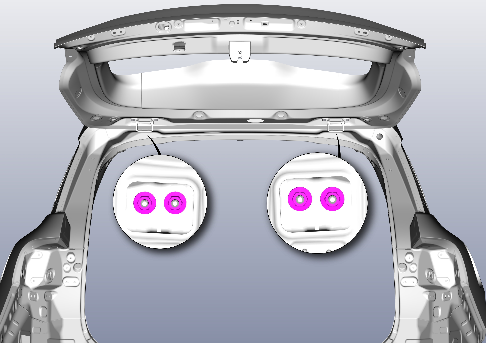

Регулировка сварного узла двери задка
Ослабить (без выкручивания) крепежные гайки петли двери задка (со стороны крыши) для регулировки двери задка. Инструмент: торцевая головка (13), момент затяжки болтов: 33 ± 3 N.m.

Подсказка
-
Если в закрытом состоянии сварного узла двери задка зазоры по всему периметру равномерны, дверь не утоплена внутрь и не выступает наружу, а контуры выровнены, это означает, что дверь задка отрегулирована правильно.
-
Если в соответствии с вышеуказанными шагами не удалось достичь требуемого результата регулировки, можно обратиться к следующим шагам для дальнейшей регулировки.
-
Снять узел декоративной панели верхней части стойки C, см. Снятие и установка облицовочной панели стойки C.
-
Отсоединить задние крепежные фиксаторы обивки потолка, см. Снятие и установка облицовочной панели стойки C.
-
Ослабить (без выкручивания) крепежные гайки петли двери задка (со стороны крыши) для регулировки петли сварного узла двери задка. Инструмент: торцевая головка (13), момент затяжки болтов: 33 ± 3 N.m.
-